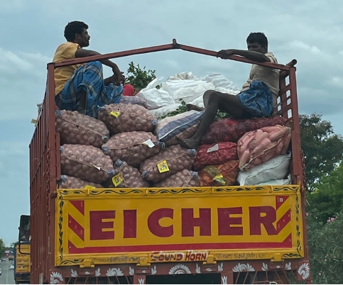

I'm hosted with GitHub Pages
In India, being white was a rarity, so I was a conspicuous character. On top of that, I am nearly 6 feet tall—7 inches taller than the average Indian male, who stacks up at 5 feet 5 inches. Based on statistics from India’s Ministry of Tourism, North America, Europe, and Australia collectively sent 4.9 million tourists to India in 2018. If we assume that all of those tourists are white (which they most certainly are not) and that each tourist stays for about one month, then that translates to about 400,000 white tourists every month in India. These white tourists would represent roughly 0.03% of India’s population of 1.4 billion.
Let’s put this in perspective in an American context: In America, there are 97,000 centenarians or people over the age of 100. Centenarians represent 0.03% of the United States population of 338 million, a percentage nearly identical to the hypothetical percentage of white tourists. Seeing a white tourist in India is like seeing a centenarian in America. The rarity of seeing a white person also varies by region. In North Indian metropolitan centers like New Delhi and Mumbai, white tourists are not uncommon. Muthu and I saw our fair share of white tourists in Varanasi and Chennai. But as one travels towards the south and into the country, white tourists become far rarer. Muthu’s family lived in a small rural village in South India where I was quite the novelty. Villagers often stared at me. Muthu said that for some of the people who we met, it is possible that I am the first flesh-and-blood white person they have ever seen. It was as though I was the only rabbit whose fur failed to change from white to brown after the winter thaw.
I attracted stares everywhere I went. I sat in the front seat as we were driving to Muthu’s grandparents’ house. In front of us was a small agricultural truck packed with people. As our driver pulled up behind the truck to pass it, the women in the truck bed caught a glimpse of me. As soon as they did, bright white smiles illuminated the middle of their dark brown faces. They waved their hands and me and continued smiling.
 An agricultural truck carrying potatoes
Muthu and I slept on cots in the atrium of his family’s ancestral home. Every night, to stay cool, I slept without a shirt. While we were in India, Muthu’s family needed to complete maintenance on their house. This maintenance—whether plumbing or carpentry—was often scheduled for early in the morning. Uma, Muthu’s amma (mother), would welcome the workers into the house while I was still sleeping. On those mornings, I would wake up to the sound of hammers pounding. As I opened my groggy eyes, I could tell that unfamiliar people were nearby and were casting covert glances my way. I felt like an animal as they stared at my exposed pasty white shoulders in amazement.
The lead carpenter, after finishing his work, asked Meenakshi, Muthu’s appa (father) if he could take a picture with me. I was perfectly willing to comply. I stood next to the carpenter, who was around 30 years old, and gave a smile as Meenakshi took the picture. When Meenakshi showed the picture to the carpenter, the carpenter shook his head as though something was wrong. He pointed at me and said something in Tamil to Meenakshi. Meenakshi explained to me that the carpenter wanted me to put my arm around him for the photo. I laughed and complied with his request. Happy, a member of our tour group in Varanasi, took quite a liking to me and would frequently take selfies of him and me.
Others tried to capture furtive photos of me for posterity. Levels of subtlety varied. I am sure that people captured many clandestine photos of me without my knowledge, but many contenders lacked such guile. One middle-aged woman at the Saraswati Temple in Koothanur gathered all of her friends around her to take a selfie with me in the background. Out of courtesy, I shifted out of the frame to avoid being a photobomber. When the woman readjusted her framing to once again include me, I realized that I was in fact the reason for the selfie in the first place.
For my entire life, I have been a white English-speaking birthright American citizen. Since the majority of people around me shared those attributes, I had never properly adopted these descriptors into the schema of my identity. Conspicuity brought my American, English-speaking, and white identities to the forefront of my mind. In India, I was forced to reckon with these identities in a way that I never had to in America. My identities became modified by the definite article “the” instead of by the indefinite articles “a” and “an.” In India, I became “the American” and “the white person” as opposed to being simply “an American” or “a white person.”